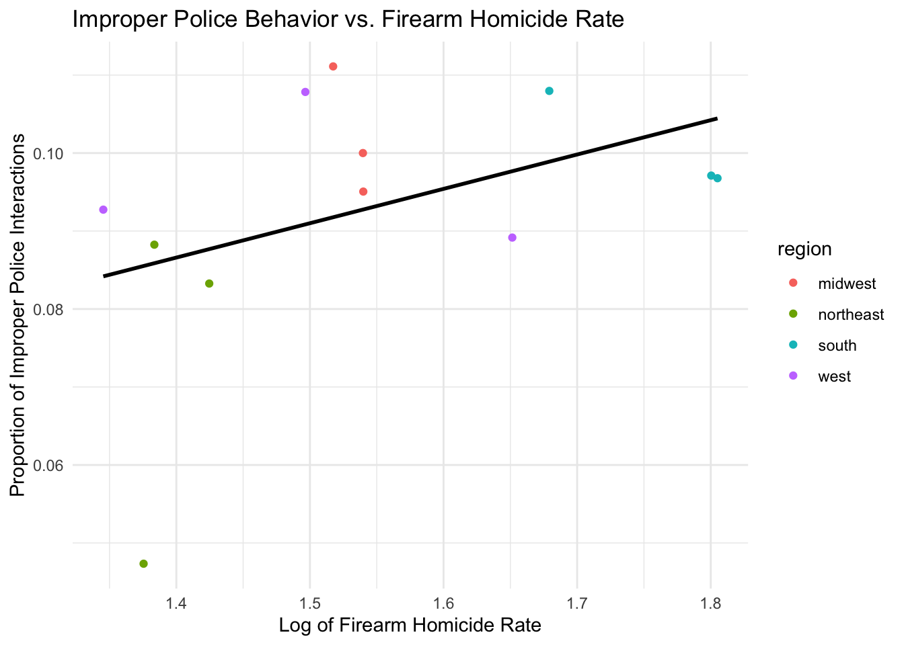

Here, a detailed analysis using more sophisticated statistics techniques is provided.
Motivation for Data Analysis
Overview of Data Analysis:
Our data analysis is performed on the combined data from two datasets. One of these datasets is titled “The Effect of Prior Police Contact on Victimization Reporting…”, and it reports national data about civilian experience with the police from the DOJ’s National Crime Victimization Survey and the Police-Public Contact Survey. The other dataset, titled “Firearm Suicide Proxy for Household Gun Ownership” examines gun ownership rates and homicide rates for different racial groups in different states of the US. We want to use these datasets to better understand the racial disparities underlying police interactions and how the interactions might be shaped by gun ownership or crime statistics. Specifically, we were curious in how variations in the homicide rate among different racial groups in different regions of the US correlated with the rate at which civilians were arrested or experienced improper police interactions.
The variables we are most interested in analyzing are the rate of improper police interactions, the rate at which people are arrested, the homocide rate, and the relative gun ownership rate in different regions of the US. We want to determine how these variables are impacted by demographic factors, particularly race, education, household income, sex, and minority population.
Here are some questions that we seek to answer in this EDA: How does the rate of improper police interactions vary among populations of different races? How does the homicide rate throughout the US vary by region and over time from 2002 to 2011? To what extent can variations in the homicide rate & gun ownership levels be explained by variations in racial demographics across different regions of the US? Do variations in the firearm homicide rate across different regions correlate with statistics about improper police behavior or arrests?
Modeling and Inference: We ran two models on our dataset. The first model was made solely on the data from the first dataset, and it examines the extent to which the probability of being arrested depends on household poverty, education level, sex, and race. Interestingly, strong correlations existed between the probability of being arrested and household poverty, education level, and sex, but not for race. A more detailed description of the correlation is included with the code used to generate the model farther down on this page, where summary statistics about the model are also included. The second model was ran on the combined dataset, and it examines the extent to which firearm homicide statistics can be explained by the racial demographic variations in different regions of the US. !!!! We don’t have info on it rn but we should get (or eliminate this model)
Code:
Here, our Police Interaction dataset and all libraries are loaded.
The first step of our EDA involves examining the “PROPER” variable, a binary variable which displays whether or not the police behaved properly during each interaction. This binary variable is reported for 19,321 of the 105,273 total cases, with 1,853 reported cases of the police behaving improperly and 17,468 cases of the police reporting properly. A plot is generated here to show how the proportion of improper police actions differs among different race populations.
The plot shows that the “Black, Non-Hispanic” population experienced a much higher proportion of improper police interactions than all other populations, with about 15% of reported interactions classified as improper. Among “Hispanic” and “Other or multiracial, Non-Hispanic” populations, the proportion of improper police interacts was about 10%, while the rate of improper police interactions among members of the “White, Non-Hispanic” population was about 7%.
In making this observation, it is important to note that the proportions could be skewed due to the number of responses received for each group and the nature of data collection through a survey, which may have prompted individuals who experienced racial discrimination to be more likely to respond.
Modeling
For data modeling, the data was split into two. 80% of the data was randomly selected for the training dataset, and 20% was randomly selected for the testing dataset. The model attempts to predict whether someone would be arrested based on their race, years of education, if their household is living in poverty, and their gender.
We chose the variables of race, years of education, and poverty to construct our model because these variables are numerical or boolean values, are present in most or all of the participant data, and display the strongest correlation with the probability of being arrested. While other variables, such as the number of years being married, could have been used, variables like these are usually not present for many survey participants and don’t provide much correlation with the probability of being arrested.
We note that, although it is not necessary to actually test our model because it will not be used to make predictions, we decided to incorporate a testing dataset to simply examine the relationship between the predictors and the ARRESTED metric.
In the training set, the F-statistic is far over 1 and the p-values show over 95% confidence in all the response variables being significant.
# Split datasplit <-initial_split(police_interaction, prop = .8)# Splitstraining<-training(split)testing <-testing(split)# Filter out some bad rowsfiltered_training_data <- training |>filter(!is.na(ARRESTED) &!is.na(RACE) &!is.na(EDUCATION) &!is.na(HHPOV) &!is.na(MALE))filtered_testing_data <- testing |>filter(!is.na(ARRESTED) &!is.na(RACE) &!is.na(EDUCATION) &!is.na(HHPOV) &!is.na(MALE))# Train modelmodel <-lm(ARRESTED ~ RACE + EDUCATION + HHPOV + MALE, filtered_training_data)
The logistic regression model was trained to predict whether an individual would be arrested based on a subset of predictors, including race, years of education, household poverty status, and gender. These variables were selected because they represent key demographic factors strongly associated with the likelihood of arrest, as identified through EDA.
The model achieved an R-squared value of 0.019, indicating that while the model explains a small portion of the variability in arrests, the predictors are statistically significant contributors.
When looking at the variables outlining the racial demographic of the survey responses we notice that being Hispanic, Non-Hispanic multiracial, or White (Non-Hispanic) is associated with a slightly lower probability of arrest compared to the baseline racial group (Black Non-Hispanic), with coefficients of -0.0287, -0.0301, and -0.0274, respectively, all of which are statistically significant (p-values of 1.47e-05, 0.000454, 7.96e-08 respectively). This shows that the Black Non-Hispanic race sees a statistically significant higher likelihood of being arrested based on their race alone.
We also see a strong correlation for the predictors of education, household poverty, and gender. Individuals with fewer years of education are less likely to avoid arrest, as indicated by a coefficient of -0.0047 (p-value < 2e-16). Household poverty shows a positive association with being arrested, with a coefficient of 0.0238 and a p-value of 2.70e-07. Additionally, males are significantly more likely to be arrested compared to females, as indicated by a coefficient of 0.0259 (p-value < 2e-16).
This model suggests that Black Non-Hispanic, lower-income, uneducated, males are the demographic most likely to be arrested by a police officer during any given interaction.
The summary of this model denotes that there are very small p-values of less than 2.2e-16,indicating that the combination of predictors contributes meaningfully to explaining the likelihood of arrest.
Firearm Proxy Dataset
The second dataset to be incorporated describes the number of homicides, the number of suicides, and the number of suicides done with firearms for whites & nonwhites within different states from 1949 to 2020.
This map represents the rate of homicides by firearm by state. There are different levels of colors to represent the homicide rate by state, and the diagrams are split into 2002, 2008, and 2011.
firearm_ds <- firearm_ds |>mutate(firearm_homicide_rate =as.numeric(firearm_homicide_rate),state =tolower(state)) |>filter(!is.na(firearm_homicide_rate))us_states <-st_as_sf(maps::map("state", plot =FALSE, fill =TRUE)) %>%mutate(region =tolower(ID)) %>%# Convert state names to lowercaseselect(region, geom) # Retain only state name and geometry columnsmap_data <- us_states |>rename(state = region) |>left_join(firearm_ds, by ="state")map_data$log_firearm_homicide_rate <-log(map_data$firearm_homicide_rate +1)ggplot(map_data) +geom_sf(aes(fill = log_firearm_homicide_rate), color ="black", size =0.2) +scale_fill_viridis_c(option ="plasma", name ="Homicide Rate") +theme_minimal() +labs(title ="Firearm Homicide Rate by State",fill ="Rate" ) +facet_wrap(~year)
From this map, we notice that across the 3 years we seek to observe, its generally true that states within the southern and midwestern regions of the United States have the highest rate of firearm homicide.
This is useful to understand since we can use this information to dig deeper into the causes behind negative police behavior. Specifically, this may help us determine whether race or the level of neighborhood gun violence are more useful indicators for particular aspects of police behavior in our study.
Combined Regional Dataset
The plot below shows a breakdown of the firearm homicide rates for each region across the years relevant to our analysis.
ggplot(combined_regional_ds, aes(x = year,y = fa_homicide_rate,color = region )) +geom_line() +# Create a line for each regionlabs(title ="Firearm Homicide Rate by Year and Region",x ="Year",y ="Firearm Homicide Rate" ) +theme_minimal() +# Clean theme for the plottheme(legend.title =element_blank(), legend.position ="bottom" )

This interactive scatter plot shows the Firearm Homicide Rate relative to racial proportions of the 4 regions. Most of the firearm homicides took place in the South, with similar firearm homicide rate in the Midwest and Northeast, and the lowest rate of firearm homicides in the West. From the different scatter plots, regions with more minorities had higher firearm homicide rate, which could be related to the higher proportion of improper police behavior reported by minorities than by non-minorities.
# Define server logic ----# server <- function(input, output) {# # Load the data# data <- read_rds(here::here("dataset", "combined_regional_data.rds"))# # # Render the interactive plot# output$scatterPlot <- renderPlot({# ggplot(data, aes(x = fa_homicide_rate, y = .data[[input$selected_race]])) +# geom_point(aes(color = as.factor(year)), size = 2, alpha = 0.7) + # Use color to differentiate years# geom_text(aes(label = year), vjust = -1, size = 3, alpha = 0.8) + # Add year annotations above points# facet_wrap(~ region) + # Optional: Facet by region# labs(# title = paste("Firearm Homicide Rate vs", input$selected_race),# x = "Firearm Homicide Rate",# y = "Proportion",# color = "Year"# ) +# theme_minimal() +# theme(# legend.position = "bottom", # Place legend at the bottom# legend.box = "horizontal", # Align legend items horizontally# legend.text = element_text(size = 10), # Adjust legend text size# legend.title = element_text(size = 12), # Adjust legend title size# legend.key.width = unit(1, "cm"), # Add space between legend items# legend.spacing.x = unit(0.5, "cm") # Increase horizontal spacing# ) +# guides(# color = guide_legend(nrow = 1, byrow = TRUE) # Force a single-row legend# )# })# }
This plot shows that, like we expected, the South region by far had the highest rate of firearm homicides. We may expect to see if there is correlation between this statistic and our variables related to police behavior.
The plots below show changes in the overall population percentage of each racial group across the years in our original study. We use this demogrpahic information to create a model that will train for a linear relationship between the rates of firearm homicides and the distribution of racial groups for this data. We put all the racial groups into one figure to better compare.
long_data <- combined_regional_ds %>%pivot_longer(cols =c(WHITE_NH_PROP, B_NH_PROP, HISPANIC_PROP, OTHER_MULTI_NH_PROP),names_to ="Group",values_to ="Proportion" )# Combined plotggplot(long_data, aes(x = year,y = Proportion,color = region,linetype = Group # Differentiates groups by line type )) +geom_line() +# Create a line for each group and regionlabs(title ="Proportion of Population Groups by Year and Region",x ="Year",y ="Proportion",color ="Region",linetype ="Group" ) +theme_minimal() +# Clean theme for the plottheme(legend.title =element_blank(),legend.position ="bottom" )
The graph illustrates the proportion of various population groups (White Non-Hispanic, Black Non-Hispanic, Hispanic, and Other/Multi Non-Hispanic) over time across different regions from 2000 to 2010. The trends reveal that the White Non-Hispanic population proportion remains the highest in all regions, with a slight decline over the years, indicating a gradual decrease in the dominance of this demographic. In contrast, the Hispanic population proportion shows a gradual increase over the same period, suggesting growing representation in most regions. The Black Non-Hispanic and Other/Multi Non-Hispanic proportions remain relatively stable, with smaller variations across regions and years. The data highlights distinct regional patterns, as some regions experience more pronounced shifts in demographic proportions, particularly for the Hispanic and White Non-Hispanic populations.
Call:
lm(formula = fa_homicide_rate ~ OTHER_MULTI_NH_PROP + HISPANIC_PROP +
B_NH_PROP + WHITE_NH_PROP, data = combined_regional_ds)
Residuals:
Min 1Q Median 3Q Max
-0.7323 -0.3882 0.1048 0.3215 0.6758
Coefficients: (1 not defined because of singularities)
Estimate Std. Error t value Pr(>|t|)
(Intercept) 2.8224 0.9544 2.957 0.0182 *
OTHER_MULTI_NH_PROP -18.3424 18.3005 -1.002 0.3456
HISPANIC_PROP 11.3317 7.5610 1.499 0.1723
B_NH_PROP 6.8421 6.9735 0.981 0.3553
WHITE_NH_PROP NA NA NA NA
---
Signif. codes: 0 '***' 0.001 '**' 0.01 '*' 0.05 '.' 0.1 ' ' 1
Residual standard error: 0.5255 on 8 degrees of freedom
Multiple R-squared: 0.6639, Adjusted R-squared: 0.5379
F-statistic: 5.268 on 3 and 8 DF, p-value: 0.02683
We modeled to predict the firearm homicide rate based on the proportions of various racial and ethnic groups within a region. The model has an r-squared value of 0.6639 and an adjusted r squared value of 0.5379, indicating that approximately 54-66% of the variability in firearm homicide rates is explained by the included predictors. The overall model is statistically significant, with a p-value of 0.02683, meaning the predictors collectively have a meaningful relationship with the firearm homicide rate. However, individually, none of the predictors except for the intercept shows statistical significance at the conventional 0.05 level. The proportion of “Other or Multiracial Non-Hispanic” population has a negative coefficient (-18.34), suggesting an inverse relationship with firearm homicide rates, though the p-value (0.3456) indicates this finding is not statistically significant. Similarly, the “Hispanic” population proportion has a positive coefficient (11.33), suggesting a potential positive relationship, but the p-value (0.1723) makes this inconclusive. The “Black Non-Hispanic” population proportion also shows a positive coefficient (6.84), but with a p-value of 0.3553, this relationship lacks statistical significance. The coefficient for “White Non-Hispanic” was not defined due to singularities, likely because of collinearity with other predictors. Overall, while the model highlights potential relationships, further refinement or additional data may be needed for stronger conclusions.